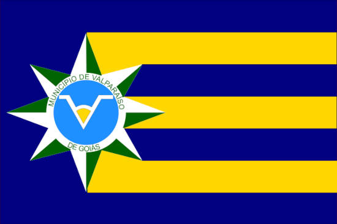

Site de Exemplo
Historia de Goias
"A história de Goiás se iniciou há mais de 10 mil anos, quando povos caçadores-coletores passaram a viver na região. Tempos depois populações ceramistas, que praticavam a agricultura, começaram a ocupar o território."
"Após o início da colonização portuguesa, diversas expedições paulistas partiram em direção a Goiás, descobrindo minas de ouro. As primeiras vilas foram edificadas nas proximidades dessas minas. O Ciclo do Ouro durou pouco em Goiás, entrando em declínio na década de 1770. Após o ouro, a criação de gado passou a ser a principal atividade econômica da região."
Foto da Bandeira de Goias
Historia de Luziania
Luziânia foi fundada em 1746 e estabelecido o seu aniversário em 13 de dezembro. Recebeu o nome inicialmente de Santa Luzia, em homenagem a sua padroeira. A atividade de mineração na região foi uma das primeiras descobertas, foi a partir daí que iniciou a ser povoada em meados do século XVIII.
A transferência da capital federal do Rio de Janeiro para o Planalto Central também foi bastante importante, pela ótica de desenvolvimento do município, incluindo o crescimento populacional. O então presidente da República, Juscelino Kubitschek, também teve suas raízes na cidade goiana, sendo proprietário de uma fazenda em Luziânia, a conhecida Fazendinha JK, que conserva relíquias e patrimônio histórico, como uma casa e capela projetada por Oscar Niemeyer.
Historia de Valparaiso-GO
A história de Valparaíso de Goiás começou em 19 de abril de 1979, com a inauguração do pequeno Núcleo Habitacional Valparaíso I, que surgiu em função da construção de Brasília. O mais novo Núcleo Habitacional de Luziânia contava com apenas 864 casas, uma escola estadual e o prédio da administração regional.
No dia 2 de maio de 1980, através do Decreto-Lei nº 972, ficou instituída e oficializada a data de 19 de abril para comemorar o aniversário da fundação do Núcleo Habitacional Valparaíso. Nesta época, Valparaíso já contava com um posto telefônico, uma agência de Correios e Telégrafos, um escritório de contabilidade e onze lojas comerciais. Na área educacional, a cidade tinha uma escola estadual, que atendia aos alunos do primeiro grau e duas escolas particulares. Foi elevado à categoria de município com a denominação de Valparaíso de Goiás, pela lei estadual nº 12667, de 18 de julho de 1995, desmembrado de Luziânia.
Foto da Bandeira de Valparaiso-GO
